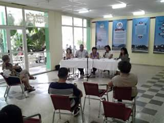

Beatriz Ochoa: Perdona que te interrumpa, Leyva, pero quizás sea porque somos como una gran esponja que lo absorbe todo y lo atemperamos a las condiciones nuestras; eso es un fenómeno social que nos está golpeando muchísimo y redunda en el papel que tienen los medios de difusión masiva. Toda la parafernalia que existe alrededor de los eventos de moda que se ven como algo superficial, algo anodino y no como algo que está provocando una impronta. En este minuto en La Habana si tú no andas con una zaya y una chaqueta, medias finas, zapatos altos, pelo laceado, maquillada (cánones europeos o norteamericanos) cuando llegas a una cadena de tiendas nadie te atiende, o te miran de arriba abajo y no te dan importancia. Esa es una de las cosas contra las que tenemos que luchar.
Se está absorbiendo todo, pero se está haciendo de manera acrítica. El modo de comercialización, el modo del marketing, el modo de proyección de las empresas ya es de este tipo: europeo y norteamericano. Tengo la esperanza de que también se establezca el chino, pues ellos son muy medidos, muy metódicos, muy educados, muy profesionales. El símbolo de profesionalidad está en andar con cuello y corbata desde que uno se levanta y yo, que soy una profesional, no puedo andar de cuello y corbata porque me ahogo, tengo que coger guagua, tengo que coger coche, tengo que hacer otras cosas, entonces tengo que buscar otras soluciones. A eso me refería: somos una gran esponja, se está trabajando en lograr una identidad, pero ¿con qué bases? ¿Qué vamos a tomar como modelo? Eso es lo preocupante. Hay que buscar nuestros verdaderos valores identitarios para podernos proyectar, siempre con la conciencia que si nuestra identidad no se proyecta en el vestir o si se proyecta deficitariamente, de la misma manera lo hará en otros aspectos de la vida.
Le comentaba a María Antonia y a Yoan algo que uno aprecia en las ferias internacionales. Los artesanos de Centroamérica traen verdaderas bellezas. La manualidad es cara, se paga muy bien porque tiene un sello muy propio, muy único. Me pregunto cuál es el sello nuestro, dónde están nuestras manualidades, dónde está el trabajo que puedes mirar y decir: «Esto de verdad es cubano». Estoy hablando de algo que no sea solo guayabera y la bata cubana. Y si eso pasa en el textil y en las manualidades, ¿no estará pasando en otras esferas de la cultura?, ¿no es la cultura un sistema, donde la afectación de uno de sus componentes trae aparejado la afectación de otros? Donde está el elemento que nos identifica a nosotros como camagüeyanos, algo que haya trascendido, que donde quieras que vaya pueda decirse: «Esto nada más se hace en Camagüey». No existe. Entonces es complicado, muy complicado.
Ricardo Leyva: A veces se habla del famoso período especial, pero yo mismo le agradezco a esa etapa porque yo nací en pleno período especial. En ese momento me hice artista y comencé mis trabajos en el polo turístico. La situación de este país fue caótica en todos los sentidos. En esta provincia nosotros brillamos y salimos a flote gracias a la moda del Fondo de Bienes Culturales y de la ACAA, que tuvo un desarrollo descomunal. Entonces ahora que hay toda esta apertura ha habido como una calma, algo extraño que no favorece nuestra labor. Esto es un trabajo que no se hace en dos o tres días, no es como hacer pizzas. Usted mismo si se va a hacer una camisa, ¿dónde va a buscar los botones? No aparece una cosa tan sencilla como los botones. Y no hablemos de algo que yo sufro enormemente: los famosos percheros, tengo que morir con los tristemente célebres percheros de alambre porque no hay un perchero digno que sirva para poner en una tienda.

Es algo muy complicado. A veces pienso, y lo he conversado con Beatriz, que si hubiera gente que se aunara como en otra época. Pero no existen y parece que no van a existir. En muchas casas las máquinas de coser son de adorno, completamente de adorno, las personas no saben arreglar ni una costura de una sábana o la pata de un pantalón, no digamos cambiar una portañuela. Yo mismo aprendí de manera autodidacta, totalmente autodidacta: hice faldas torcidas, cuellos que se iban para atrás, aquello fue de horror, y desbaraté ropas, en fin. Pero hoy veo que muchas personas jóvenes cuando se acercan a mí, por no decir todas, lo que quieren es los modelos, sí, el glamour, la moda, Belleza Latina, Osmel Souza, eso es lo que ellos quieren. No saben que detrás de eso hay toda una parafernalia.
Lo que decía Beatriz de los chinos es verdad, pero los chinos tienen varias escalas. Un ejemplo: Dolce & Gabbana saca un abrigo y para tratar de matar a los chinos les ponen en cada diente de cada zíper una sigla, viene un chino, lo ve y él lo hace igual también, para violar la marca. Eso funciona así y la mercancía china que se vende aquí no es la que se vende en Canadá y en otros lugares, no, no, no… supera a la original porque ellos tratan de superar hasta en la calidad de los materiales y para colmo el precio es menor, así que es un mercado muy invasivo y, como dice Beatriz, más tarde o más temprano va acabar con las grandes marcas y es triste que la gente pague aquí ochenta o setenta dólares por un pantalón que allá te cuesta tres dólares. Entonces a Rebeca, a la hora de vender un juego de hilo en treintaicinco o cuarenta dólares que es el precio mínimo, le dicen que no, que es caro. Nadie valora el trabajo. He tenido clientes que tienen tres tallas en el mismo cuerpo y conozco personas que no saben su talla porque hasta en eso el mundo ha avanzado. Ahora hay como ocho líneas internacionales y una L puede ser desde una M chiquita hasta una grande. Hasta eso se perdió, igual que las medidas de pantalón y las de zapato, verdaderamente es bastante amplio el tema.
María Antonia: Este panel me resulta muy entrañable porque soy hija de una costurera y me crié en ese ambiente. Así que más o menos tengo algunas nociones de ciertas telas, algo que mi mamá me advertía muchísimo cuando me antojaba de algún modelo: revisar si la tela que teníamos era la apropiada o no, porque eso podía dar al traste con cualquier sueño que pudiéramos tener. Me es muy entrañable por esta circunstancia y por el trabajo que he pasado para encontrar una modista. Mi mamá no entendía cómo se podía tener clientes a las que no se les hubiera tomado las medidas. Ella me ponía a anotar las medidas de las pocas personas a quienes todavía les cosía cuando yo era niña. Llegué a saber de memoria el orden en que se anotaban y la manera en que se tomaban. Ahí si discrepo con Beatriz: no creo que se estén perdiendo los oficios, creo que se han perdido. El asunto es verdaderamente terrible y en eso influyen muchísimas cuestiones.
Voy a hacer una anécdota, y disculpen que hable así, a título personal, pero esa experiencia primaria que tuve en ese sentido fue muy significativa. Mi mama no quería que yo fuera costurera. Hubo un momento en que la imagen de lo femenino y de la mujer exitosa en Cuba negaba por completo las manualidades; la mujer tenía que conquistar el espacio público de una manera tremenda y ser hija de una costurera traía sus consecuencias, pues yo no lo era de una costurera a los efectos legales, sino de un ama de casa y eso era uno de los peores estigmas que una persona podía tener: ser hija de una no trabajadora te marcaba hasta en la famosa libreta, existían los días en que compraban las trabajadoras y los días en que compraban las amas de casa. Después la FMC ha intentado recuperar el cultivo de las manualidades a partir de las Casas de Orientación a la Mujer y en ese hecho se ha visto un método para la educación o para la reincorporación a la sociedad. Sin embrago, se ignora el valor en sí mismo que estas tienen. Me parece que ha sido un poquitico tarde. Muchas feministas ven bien que se quiera trabajar con ciertas mujeres de esta manera, pero, al mismo tiempo, lo critican por aquello de que es un oficio tradicional, como si de pronto eso se convirtiera en un problema. Mi papá lo dice en broma: en los sesenta y los setenta había que andar con las camisas de caqui sudadas, y molestaba alguien que combinara la ropa o que intentara salirse de esa rutina. La imagen de lo femenino fue la que más se dañó.
Yo estaba de reposo cuando Fidel murió. Y vi muchos de los materiales que se trasmitieron por TV, y hubo uno que me llamó mucho la atención. Era un documental sobre los cursos de costura Ana Betancourt impartidos a las campesinas que popularmente eran llamadas así, las Ana Betancourt. Es un documental sin entrevistas, de pura observación, que me parece incluso muy adelantado para la época. Hay unas secuencias en las que ellas se están preparando para un desfile en el que van a mostrar lo que habían aprendido frente a un Fidel jovencísimo. Los códigos son los mismos de finales de los cincuenta: las faldas amplias o estrechas y por debajo de las rodillas, los zapatos corte salón, puede adivinarse que tienen medias… Y yo me pregunto dónde se produjo la ruptura, la que evidentemente fue posterior, y qué la motivó. ¿Fue por el acercamiento a la Unión Soviética?, ¿por la crisis económica?, ¿por el bloqueo?, ¿por la ruptura con los que habían sido nuestros suministradores hasta ese momento, de donde habíamos recibido nuestros patrones? No tengo una respuesta. Pero introduzco el tema porque debemos ver las cosas en un contexto mucho más amplio.
No creo que toda la responsabilidad sea de la familia. No tengo hijos, pero sí adolescentes en mi ámbito, y es muy difícil luchar contra las tendencias que el medio impone. Hay una edad, entre los trece y los quince años, en que la comunicación se hace difícil, a partir de los dieciocho puedes establecer otro diálogo, pero hay edades en que todo se vuelve muy difícil por la presión social que el grupo ejerce. En mi cuadra hay un preuniversitario, y les aseguro que difícil saber cuándo están más uniformados los muchachos, si cuando están con el uniforme del pre o cuando andan vestidos a la moda, que deviene un nuevo uniforme. Es la homogeneidad misma. Me pregunto si sucede así en otras partes del mundo.
Algo que me espanta es saber que el uniforme que se usa hoy en la primaria es el mismo que utilicé yo, y lo mismo puede decirse de los de la secundaria y del pre. Están congelados en el tiempo, la pañoleta está hecha incluso con el mismo tipo de tela. No hemos tenido la habilidad de buscar un diseño mucho más contemporáneo para los uniformes escolares. Yo, en principio estoy contra los uniformes, pero ese es un criterio muy mío, y estoy clara de que la sociedad se mueve en otras coordenadas.
Son muchas las cuestiones que se pueden debatir, dichas muchas ya en esta mesa, pero una de las cuestiones más lacerantes es la relacionada con el poder adquisitivo. Uno no puede —hablo de los profesionales— elegir la propia imagen. Hay muchas influencias espurias en el terreno de la moda, desde el pariente en el extranjero que algún día te regala algo —y ya se sabe: a caballo regalado no se le mira el colmillo— hasta las llamadas «mulas» que están importando las peores tendencias de la moda. Vuelvo con mi papá, que es muy ocurrente, y que me dice que él no ve en la televisión, en programas extranjeros, a nadie con la barriga afuera ni con brillos. En Cuba, el mercado está condicionando al público. Eso es lo que existe, eso es lo que circula, eso es lo que el grupo tiene, pues eso es lo que el joven cree que debe usar. Es un panorama muy complejo, que hay que ver con sus aristas económicas, culturales, ideológicas. Roland Barthes fue una de las personas que desbrozó el camino, viendo las complejidades de ese acto aparentemente tan inocente en el que elegimos qué lucir.
Yoan Pico: Contra las mulas yo no estoy, creo que dan una opción. Vi mucha ropa de bambula en puntos de Ecuador, pero luego se decidió eliminar los puntos de venta de Ecuador. Vi a muchas personas resolver en estos puntos de venta con opciones más baratas que las ofertadas en las tiendas. De las tiendas me asombra el precio. Vas a comprarte un pitusa que te parece normal, decides comprarlo, y cuando lo viras ves un águila roja en el bolsillo. Parece un diseño hecho para afear la pieza. ¿Quién diseña eso? Es el enemigo del buen gusto, tal parece que puesto por la CIA.
María Antonia: Me preocupa más que saber quién lo diseña, precisar quién es el responsable de su presencia en nuestras tiendas. Esta mesa está incompleta, pues lo ideal hubiera sido haber sentado aquí a personas que nos pudieran explicar los mecanismos para el abastecimiento y políticas de precio de las tiendas. Y no estoy en contra de las mulas, el problema es que al ser tan deficitaria la oferta de las tiendas, tan impensada, es una opción que puede ser más económica, pero no todos los puntos ni todo el mundo promueven el buen gusto. Una vez, hablando de la posibilidad de salir del país y traer algo para vender, un amigo se burló de mí cuando dije que me gustaría traer chalinas. Brillos, muchos brillos, fue lo que me sugirieron. El mercado está condicionando al público, y si existieran otras opciones uno podría elegir. Es la experiencia de Rebeca, quien apuntaba que ya va habiendo otros sectores que saben apreciar otras calidades.
El asunto es el diseño, por supuesto, pero también cómo se elige la oferta en las tiendas, y sobre todo algo que para mí es un misterio: ¿cómo puede vender más barato una persona que viaja, que se paga el pasaje, tiene que luchar con la policía en el lugar donde va, pagarse un hospedaje, pagar posiblemente en la Aduana, pagar las licencias aquí o arriesgarse?, ¿cómo una persona en esas condiciones puede vender más barato que el Estado, el mayorista por excelencia, con toda la infraestructura para lograr precios más competitivos? No lo entiendo.